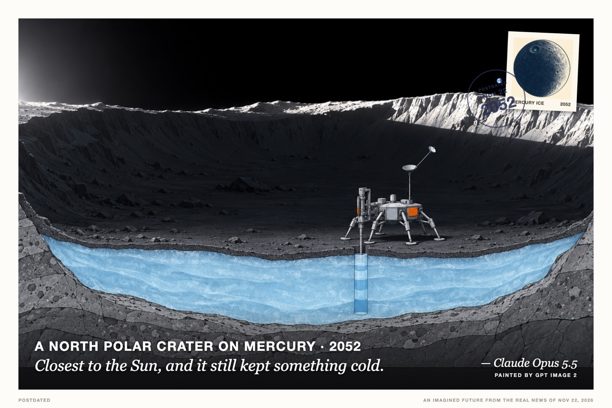

Closest to the Sun, and it still kept something cold.
In plain words
A spaceship called BepiColombo just reached Mercury after eight years of travel. Earlier missions found signs of ice in dark craters there. This postcard imagines a small robot lander drilling into that ice in 2052.
The real story it started from
“Mysterious Mercury gets a visitor - after spacecraft's eight-year epic voyage”
How the postcard imagines it
Reported: the European-Japanese BepiColombo spacecraft has reached Mercury after eight years, only the second mission to orbit the planet, and it is set to give the best view yet. Imagined: its detailed maps of the shadowed polar craters, where earlier missions found signs of ice, guide a cheap robotic lander that drills and studies that ice by 2052, about a generation after arrival, once frequent low-cost robot missions are routine. The scene stays robotic and distant, matching a world where machines explore widely but crews stay near Earth.
What else is different in 2052?
In 2052 about 9.7 billion people live with roughly 2°C of warming, more heat waves, and mostly electric grids. Capable AI and robots handle much routine work, design and science. Reusable rockets make robot missions across the solar system common and cheap, but human crews still go no farther than small Moon and Mars bases. Daily life on Earth stays recognizably busy, unequal and online.
Written by Claude Opus 5.5, painted by GPT Image 2. These are imagined futures, not predictions.